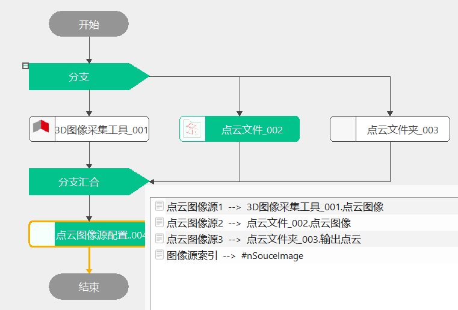

点云图像源配置工具主要是根据输入的三个点云图像以及索引，输出索引值对应的点云图像。
在3D测量中，经常会存在不同工位采集点云图像，而处理流程完全一致的情况，那么需要点云图像源配置切换不同工位的采集图像，进而达到共用处理流程的作用。

无
| 参数名称 | 参数描述 |
|---|---|
| 点云图像源1 | 图像数据来源1，最多支持3个图像源，可以是点云文件夹，点云文件，3D图像采集工具等点云文件 |
| 点云图像源2 | 图像数据来源2，同上 |
| 点云图像源3 | 图像数据来源3，同上 |
| 图像源索引 | 输出的索引值范围为1~3，默认值为1 |
| 参数名称 | 参数描述 |
|---|---|
| 输出点云图像 | 按照索引值输出对应点云图像 |
| 参数名称 | 参数描述 |
|---|---|
| 输出点云图像 | 按照索引值输出对应点云图像 |
| 执行结果 | 工具执行结果 |
| 执行时间 | 工具执行时间 |
参见“\Samples\3D\点云\点云图像源配置工具.gvp”。